最終課題 神々のボードゲーム
NO.1
NO.2
撮影協力； 杉野真央
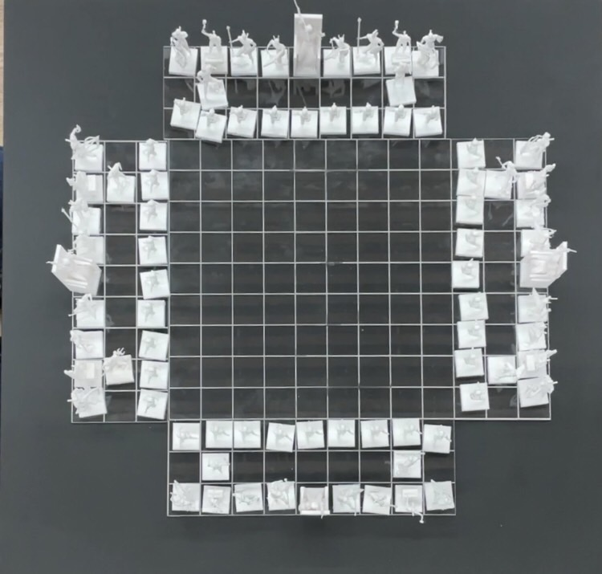
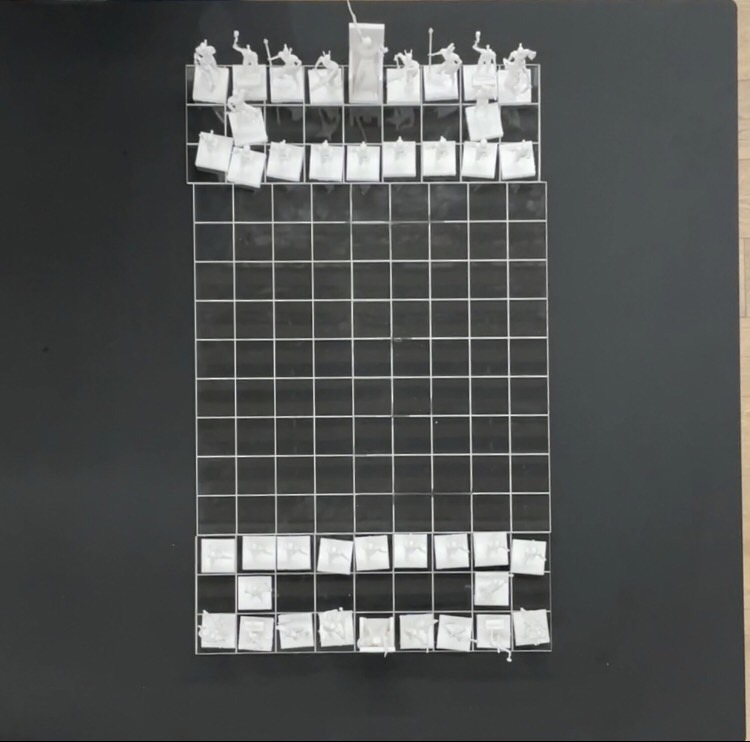
説明
四人でも対戦できる将棋。ギリシャ神話をモチーフにして従来の和のイメージとは
打って変わって、神秘的なデザインになっている。
（任意で）新感覚、人狼ルール
- まずは「相手の」駒を一つ自分の駒として認識。
- 7ターン目以降に人狼を各々公開する。
- 「2.」から3ターン以降はその人狼は相手陣営の駒となり、2ターン普通に将棋を遊ぶ。
- 「3.」が終わったら「1.」に戻る。ただし次からは5ターンで公開。
- 補足として、公開前に第三者に駒を取られた場合は不発に終わる。
駒紹介
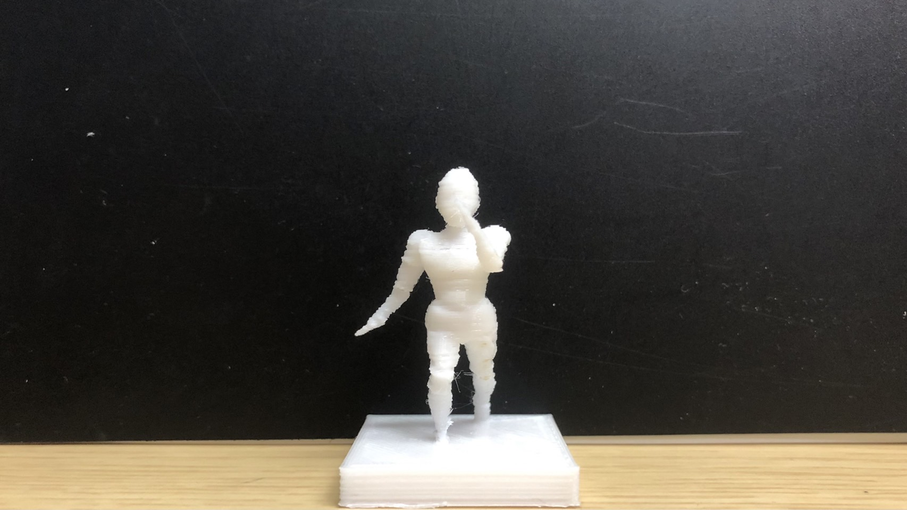
↑歩の動きをする赤ちゃんのデザインの駒。成ると羽が生え天使になる。
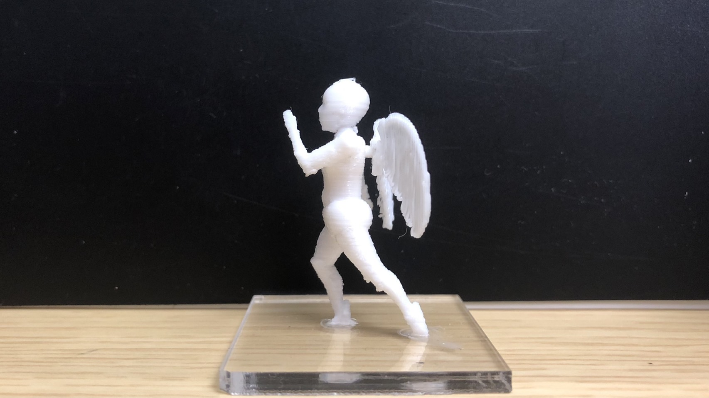
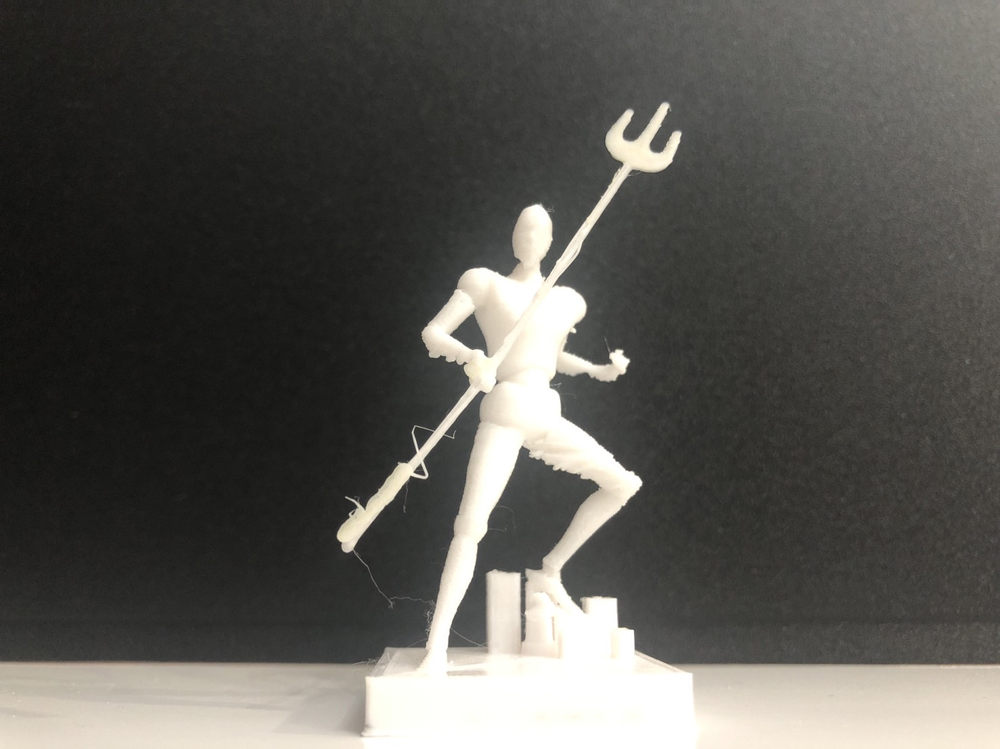
↑飛車の動きをする海の神ポセイドンのデザインの駒。
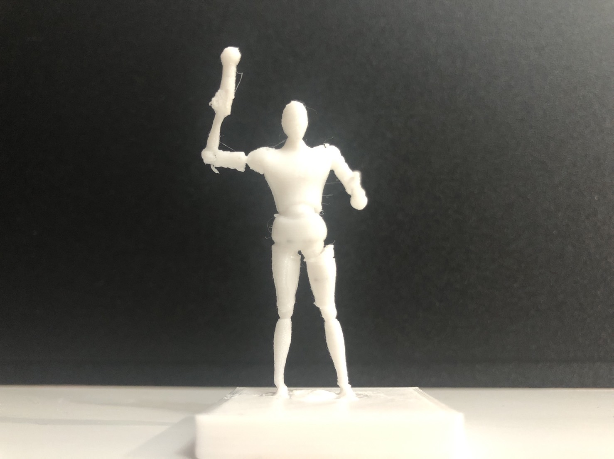
↑角行の動きをする神々の女王ヘラのデザインの駒。
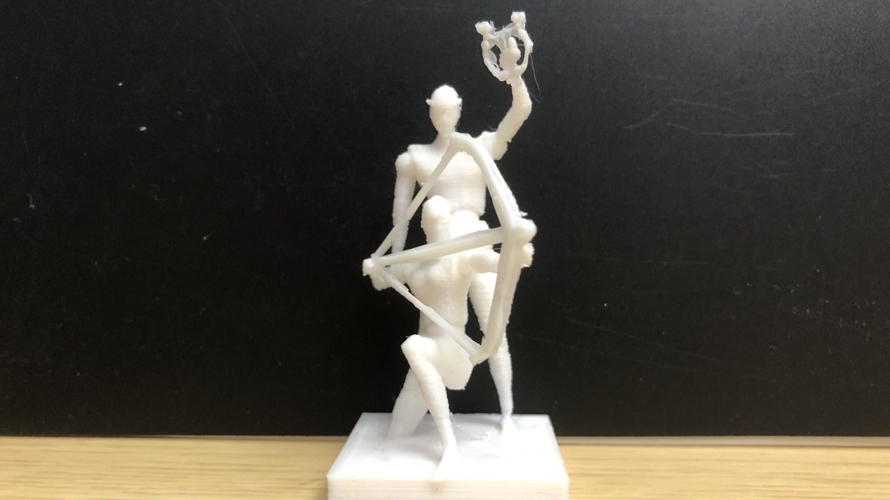
↑香車の動きをする太陽の神アポロンと月の女神アルテミスの双子のデザインの駒。
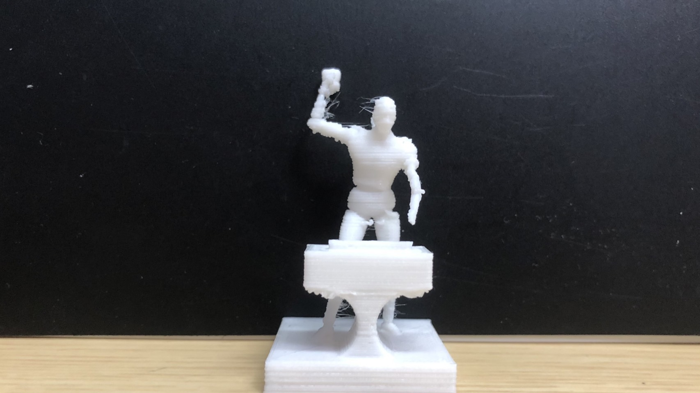
↑桂馬の動きをする鍛冶の神ヘイパイストスのデザインの駒。
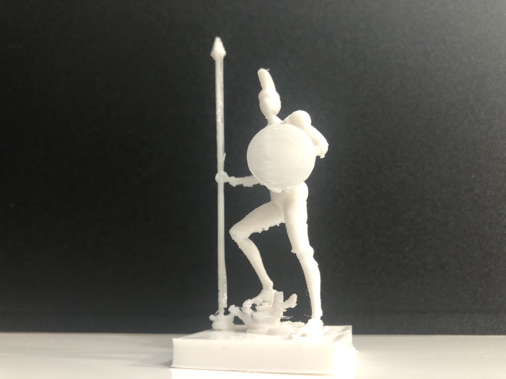
↑銀将の動きをする戦いの神アレスのデザインの駒。
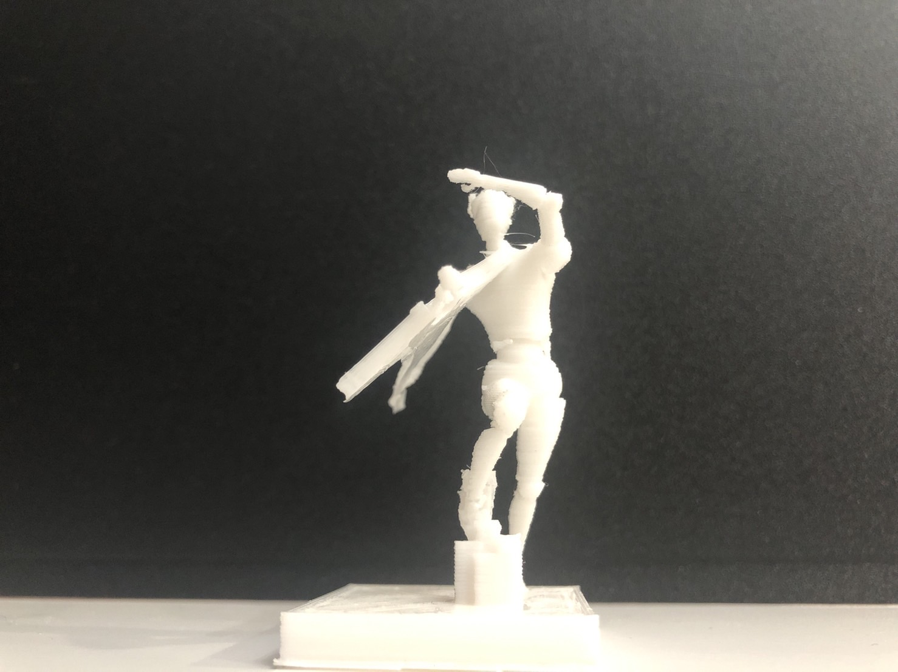
↑金将の動きをする伝令の神ヘルメスのデザインの駒。
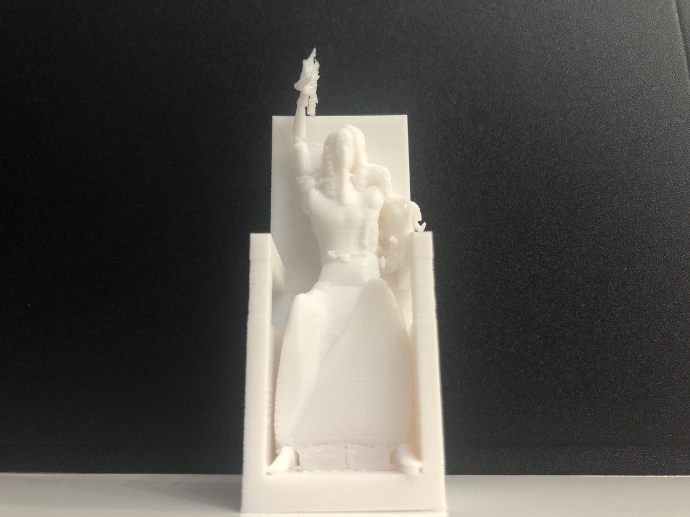
↑王将の動きをする全知全能の神ゼウスのデザインの駒。
制作において使用したもの
・３Dプリンタ
・レーザーカッター
・駒を作る際に活用したデータのあるサイト
共同制作者
ナカガワ
Y君
デジタルファブリケーショントップページ